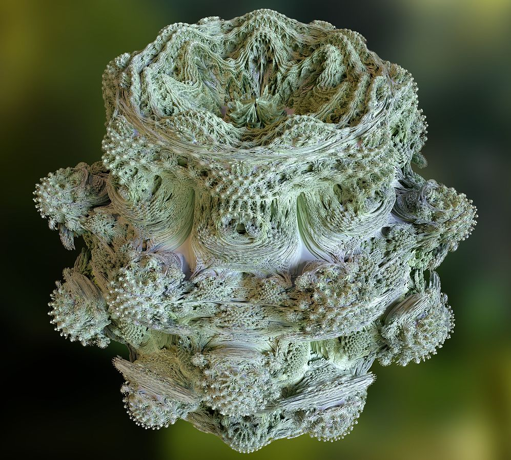
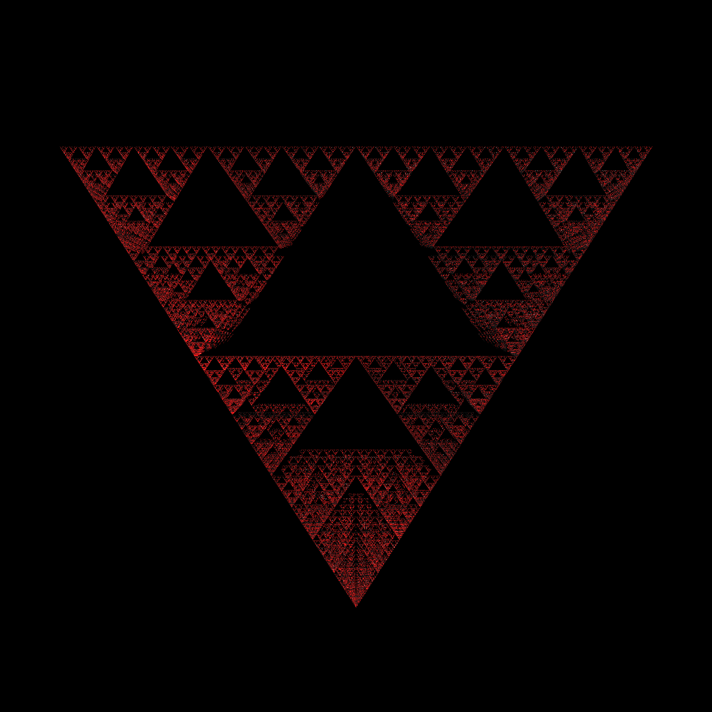
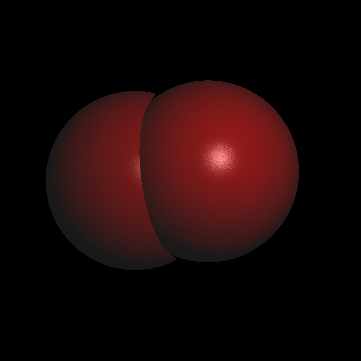
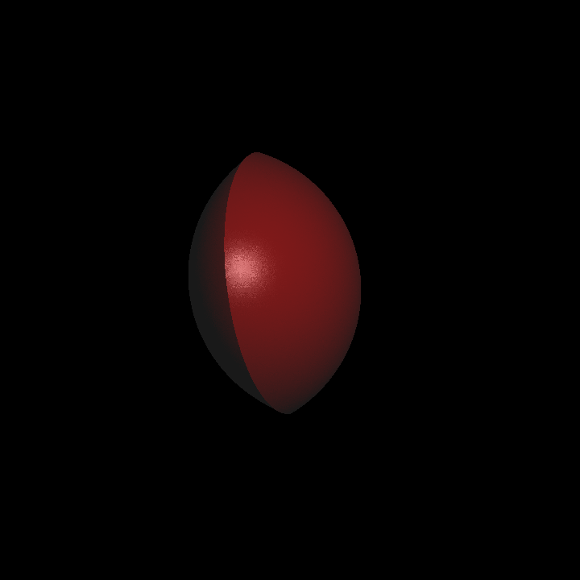
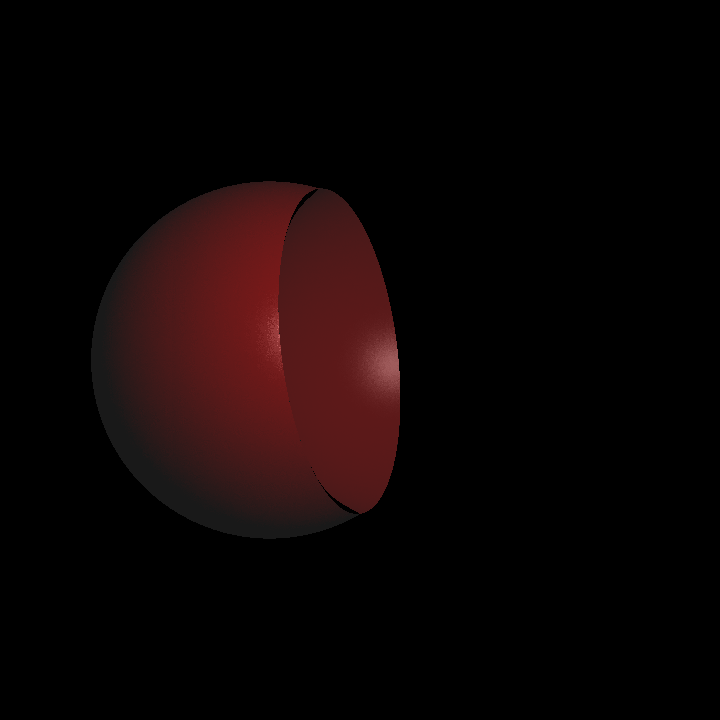

Some time ago, I discovered Shadertoy. For those who don’t know, it is a website where people submit their GL shaders and they can be viewed in the browser, inside the Shadertoy’s environment. There are lots and lots of creative and mind-blowing work there, if you have an interest in graphics, be sure to check it out. Even if you are not interested in the technical side, it can still be an entertaining activity, at least it is for me!
Anyway, if you spend any more than five minutes on Shadertoy, you will see someone mentioning they used ray marching technique to achieve what they did. But what is ray marching? How it is different from ray tracing? Why would one prefer it over ray tracing? To answer these questions, I took a small break from my raytracer and decided to implement a small ray marching engine. Hopefully we will find out the answers along the way. Onwards!
What is ray marching good for anyway?
While learning a new concept, I always find it helpful to compare with my current way of doing things, and see examples of it being useful. Let’s see some example cases where ray marching is good for.
Fractals
For me, this was the selling point. With traditional ray tracing methods, rendering fractals is either very cumbersome or outright impossible (we will see why in the upcoming sections). I was always fascinated by fractals and even rendered some of the popular 2D ones with Python back in high-school. But rendering 3D fractals? I’m sold!
Here is what we can possibly achieve with the help of ray marching:

Implicit surfaces and CSGs
We can extend the idea behind fractals, and actually render other implicit surfaces. These may include some of our common object types like spheres or boxes and some other surfaces which we have not rendered before (torus is one example). We can also combine our surfaces to create new surfaces, which is called Constructive solid geometry, or CSG for short. This way we can express some surfaces with much ease, compared to the explicit alternatives.
Real-time rendering and parallelism
I have not implemented this myself, so take my word with grain of salt. However, as far as my knowledge goes, ray marching is also a suitable strategy for parallel renderer implementations. The ray marching algorithm is generally involved with only local information at each step. This means less divergence between parallel tasks and in turn more opportunity to parallelize.
Now that we see why ray marching is useful, let’s have a look in what ways it is different than ray tracing.
Back to basics: surfaces
In order to understand how ray marching works, let’s go over what we have been doing with ray tracing up until now. First of all, we need a scene to render, right? In this scene description, we describe lights, camera, materials, and most importantly object data. This object data includes vertex positions and in the case of other specific objects it may include additional data (like radius for sphere). This is defining surface geometry explicitly. This means that we can solve the intersection formula directly for the \(t\) value. An example would be the ray-sphere intersection formula:
\[ (p - c)\cdot(p - c) - R^2 = 0 \]
Solving the equation for the \(t\) parameter yields:
\[ t = \frac{-d\cdot (o-c) \pm \sqrt{(d\cdot (o-c))^2 - (d \cdot d)((o-c)\cdot (o-c) - R^2)}}{d\cdot d} \]
And it has been serving our needs until this point. But sometimes the surface function is very hard (or impossible) to solve. This is where implicit surfaces come to play. In contrast with explicit surfaces, we do not solve the formula directly. But we try out values on the formula and get a response regarding if we intersect or not.
How ray marching works
We can summarize the ray marching in two steps:
- We march forward the ray direction in increments
- Check if the distance to the surface is in an acceptable range
The thing about first step is, determining the step size is a bit problematic. If the step size is too big, we may possibly miss an intersection. If it is too small, well, it would work in theory, however it would to too computationally costly to actually use. There is a solution to this: we don’t need to use fixed step sizes. Sphere tracing method is based on this idea, so let’s explore it further.
Sphere tracing
Sphere tracing is a way to speed up the ray marching algorithm. Our fear was to take too big of a step to miss an intersection. Then we will take the biggest step such that we don’t miss an intersection. But how? Well, if we knew our distance to the closest thing in the scene from our current position, we could take a step that big and there wouldn’t be any missed intersection. Hopefully, we represent our scene with exactly that: signed distance functions!
Signed distance function
Signed distance function, despite its cool name, a very simple function. It accepts a point as argument, and returns the shortest distance between that point and some surface. We can use these SDFs to express our surfaces. In fact, we can represent a sphere originating at \((0, 0, 0)\) and \(r=1\) with this SDF:
\[ f(x,y,z) = \sqrt{x^2 + y^2 + z^2} - 1 \]
We plug our point to the function, and get our distance to the sphere represented by it. Simple stuff.
We haven’t talked about the second step of ray marching yet, but there is not much to it. We apply the SDF and check the result. There is a reason it is signed distance function, the sign tells us if the point is inside or outside the surface. And we use that information to check if there is an intersection! If \(f(point) < 0\), the point is inside the surface, hence intersection. We need a bit of a caution here. Remember sphere tracing? We take a step as big as our distance to the scene. But that way, we can never reach inside the surface! Therefore we define a small \(\epsilon\) value such that we call it an intersection when \(f(point) < \epsilon\).
Enough theory, let’s see some action!
Implementation
I almost explained all the theory, so I am about to leave you with some images. Below you will see a render of a pretty common tetrahedron fractal and examples of basic CSG operations.




There are some extra stuff regarding the shading and CSGs, but I think there are much better resources to learn them from. If you want to explore them further, you can refer to Jamie Wong’s awesome blog post. Ray marching is a vastly deep topic and there is much to learn. What I did was merely a proof-of-concept, but it was just a little side-project for me. Next time, we will continue on with our raytracer to implement some matrix operations and hopefully instancing. Until then, happy coding!